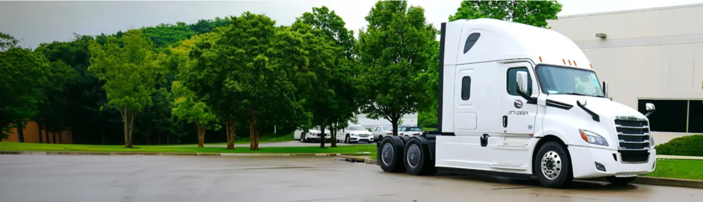

As an uncommon type of transportation, power only trucking might ensue some of the downright difficult challenges for owner-operators to face. However beneficial and regarding this type of trucking can be for owner-operators, there’s still a dire need for professional back-up represented by a team of dispatchers. ProfitLane Logistics comes for help! Check out what you get with us:
- No forced dispatch and hidden payments
- Personal dispatcher with 24 / 7 support
- Only 5% to 6% of gross